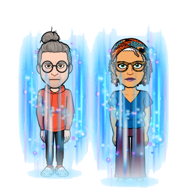

Soin de Lumière
Purification, centrage, alignement et ancrage
La purification consiste à dépolluer ton corps physique et tes corps subtils pour améliorer ta santé. Le centrage a pour but de concentrer tes énergies dans ton cœur afin que tu sois moins éparpillé-e. L’alignement vise à recentrer ton corps physique dans ton corps émotionnel, ton corps émotionnel dans ton corps mental et ton corps mental dans ton corps spirituel de façon à ce que tu gères mieux ta relation à toi-même. L’ancrage tend à reconnecter ton être à la Terre et au Ciel pour que tu vives pleinement ton incarnation.
Plus d'informationsSoin de Lumière
La fontaine de Vie
L’eau de la fontaine de Vie possède la vertu de te régénérer et donc de te rajeunir. Évidemment, tu vas me dire qu’il s’agit d’un mythe. Je te répondrai que, si elle existe dans l’imaginaire collectif, elle existe bel et bien sur un plan vibratoire ou un autre. Sache que nos guides nous ont transportés là-bas lors d’un rêve dirigé à deux. Et ce qu’il y a de formidable, c’est qu’une fois que tu es allé.e quelque part sur le plan éthérique, tu peux y retourner à volonté et à la vitesse de la pensée. Libre à toi de nous accompagner dans ce lieu hautement chargé.
Plus d'informations
Soin de Lumière
Réconciliation du féminin et du masculin
Comme l’annonçait le calendrier maya, un cycle de 26000 ans s’est achevé en 2012, et un nouveau a débuté. Le cycle précédent était un cycle d’involution où le masculin prédominait, tandis que le cycle actuel est un cycle d’évolution où le féminin est invité à reprendre sa place légitime. L’évolution de Gaïa l’entraîne à ascensionner dans la cinquième dimension. Pour se préparer à ascensionner avec elle, nous te proposons de réconcilier ton féminin lunaire et ton masculin solaire.
Plus d'informationsSoin de Lumière
Lecture des énergies
D’après la physique quantique, la matière est de la Lumière densifiée, autrement dit de l’énergie à basses fréquences. Cela s’applique au non vivant comme au vivant, donc à l’humain. Conclusion, tu es entièrement constitué.e d’énergie. C’est pourquoi parler de taux vibratoire est devenu une mode. Une lecture de tes énergies sur les plans physique, émotionnel, mental et spirituel peut révéler sur quoi tu dois encore travailler pour t’éveiller davantage à qui tu es vraiment au-delà des apparences.
 Plus d'informations